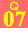
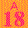
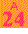
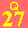
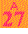
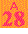
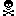

| 「ザ・人間関係」スペシャル！ | |
| Unknown | |
人間関係
解決ＳＰＥＣＩＡＬ!!
友情 も恋 も先輩後輩 も！
もっとうまくいく！
毎日 楽 しくなる ♪
道行く高校生を直撃！ ふたりってどんな関係？
◆同高の親友
Ｓ高校３年
チェル
さん
Ｓ高校３年
ゆり
さん
早く20
才になって飲みに行ってみたい
「毎日一緒に帰って、２～３時間渋谷ブラブラして、帰ってからもすぐ電話して３時間トーク。しゃべりすぎ？」（チェル）
「趣味が合いすぎだもん！ 服や小物かぶりまくりだし。チェルのその髪どめも偶然おそろいでビックリ。ソウルメイトって感じかな」（ゆり）
＊＊＊＊＊
◆
10
コ違いの妹と姉
Ｙ高校２年
尾藤朋美
さん
保育園生・５才
琴美
ちゃん
ネェネェが遊んでくれるから楽しんだもん！
「もう、コッちゃんかわいい！ 一緒にお風呂にも入るし、遊んで疲れて、そのまま一緒に寝ちゃうこともあるよね。コッちゃんが字を書く練習を見てあげるのも、ネェネェは楽しいんだよ」（姉）
「あのね、ネェネェは大事だよ」（妹）
「うん、ネェネェもだよ」（姉）
＊＊＊＊＊
◆
10
年目のダンス仲間
Ｋ高校２年
廣島未歩
さん
千歳丘高校２年
森春香
さん
同じ学校じゃないのにウチら仲いいよね
「春香とはダンススクールに通い始めた６才のときからの知り合い。やっぱ小学生のときテレビ番組のバックで踊ってた時期が一番の思い出だな」（未歩）
「なつかし～っ！ 今でもイベントに参加して一緒に踊ってるって、なんかスゴくない!? 」（春香）
＊＊＊＊＊
◆先輩×後輩？ 同級生？
Ｙ高校２年
古川美咲
さん
Ｙ高校２年
細井智帆
さん
〝ナナとハチ〟みたいな関係かな
「私が留年してなかったら、チィとは同じクラスにならなくて出会えなかったって思うと、留年もアリだったかな、なんて」（美咲）
「私が素直すぎて人にだまされやすいって、いつも心配してくれるよね」（智帆）
「ホント！ 困ったときはいつでも呼んでよ」（美咲）
＊＊＊＊＊
◆おさななじみ
県立川越女子高校３年
多田春香
さん
Ｋ専門学校１年
清水優也
クン
彼氏できたらちゃんとオレに紹介しろよ！
「近所だった優クンとは４才からの仲だよね。私が小６のとき引っ越してから会わなくなったけど」（春香）
「高１で始めたバイト先で再会しときはビックリ！ 春ちゃん全然変わってなかったもんな。将来の夢が同じ美容系ってことにも、なんかつながり感じるよ！」（優也）
＊＊＊＊＊
◆ママと四人姉妹
Ｒ高校２年
浅香由紀野
さん
主婦・37
才
真由美
さん
中学１年
奈都美
さん
幼稚園生・６才
博花里
ちゃん
２才
妃菜乃
ちゃん
家にいても退屈しないよ！
「毎年恒例の〝家族でスパリゾートハワイアンズ行き〟は、由紀野が生まれてからだからもう10 年以上。常連ね」（母）
「妹が増えるたび違ったおもしろさがあるから、何回行ってもあきない。奈都美とはケンカもするけど、四姉妹でよく買い物にも行くよね。ホント、毎日楽しすぎ！」（由紀野）
＊＊＊＊＊
◆入学式から友達
県立新羽高校２年
大久保里美
さん
県立新羽高校２年
河原彩加
さん
席が隣だっただけで超仲よしだよね
「ウチら学校では５人のグループでいるけど、彩加が休んだときはやっぱもの足りないっていうか。で、カラオケに絶対必要な人。もうノリがマジ合う！」（里美）
「Ｗ（ダブルユー）とか踊りつきだしね。今日も行っちゃう？」（彩加）
「行っちゃう～っ！」（里美）
＊＊＊＊＊
◆親子二代の親友同士
Ｋ高校２年
須藤綾子
さん
Ｍ高校１年
堀江郁子
さん
大学生になったら２人暮らししたいよね
「おばあちゃんが亡くなって落ち込んでたとき、綾ちゃんからもらった便せん５枚もの手紙、本当にうれしかった」（郁子）
「私が中１のときだったね。最近は郁子の家にばっかり泊まって、ポケモンゲームにハマってるんだよね」（綾子）
＊＊＊＊＊
◆高１の同級生
Ｇ高校３年
坂田麻里亜
さん
Ｇ高校３年
池原文
さん
おばあちゃんになってもマブダチ！
「ウチら、ケンカってしたことないよね？」（麻里亜）
「あー、気づかなかったけどないかも。麻里亜のことよくわかってるから、何をしたら怒るとか悲しむってわかってるからかな」（文）
「わかる！ ほかの人とケンカしたこととか話してるからね」（麻里亜）
教室で「人気モノな女」「キラわれる女」
女のコ２００人アンケートで判明！
で、アタシはどっちなの!? 人気モノに即なれる方法を徹底研究!!
★人気モノの法則
１
制服はシンプルきれいめが
人気モノのジョーシキ
だらしないギャル系やぶりぶり系は女のコウケ→ 「清潔できれいめなコが好き」（美桜さん）な女のコ多数！
【人気モノシャツ
】
１位
アイロンしてある！
２位
白
３位
ブルー
【キラわれシャツ
】
１位
シワシワ
２位
濃いピンク
３位
丸えり
＊＊＊＊＊
【人気モノネクタイ・リボン
】
１位
渋め色チェック・ストライプ
【キラわれネクタイ・リボン
】
１位
大きすぎピンクや赤
２位
ゆるすぎ
＊＊＊＊＊
【人気モノカーデ
】
１位
ぴったりめグレー
２位
上品ベージュ
【キラわれカーデ
】
１位
毛玉だらけ
２位
ピンク・白
３位
だぼだぼ
＊＊＊＊＊
【人気モノスカート
】
１位
ひだ多め
２位
渋め色チェック
【キラわれスカート
】
１位
しわしわ
２位
長すぎ
３位
パステルカラー
＊＊＊＊＊
【人気モノソックス
】
１位
ワンポイント紺ソ
２位
濃いグレー
【キワわれソックス
】
１位
ルーズ
２位
白ハイソ
＊＊＊＊＊
【人気モノ靴
】
１位
ＨＡＲＵＴＡの黒・茶ローファー
【キラわれ靴
】
１位
かかとを踏む
２位
スニーカー
＊＊＊＊＊
【人気モノバッグ
】
１位
何もつけてないシンプルな革
２位
有名男子校のもの
【キラわれバッグ
】
１位
リュック
２位
有名男子校のもの
★人気モノの法則
２
人気モノになれる席キープ
「最初に隣の席になったコが結局親友に」（あやさん）ってコが４割も。だから最初の席選びは重要。ちょい後ろめで話しやすい席をキープ。
ＧＯＯＤ!!
前後左右ナナメと話せる席が最高！
ＢＡＤ!!
すみっこは物理的に人と話す機会が減る
★人気モノの法則
３
髪型・メイクはおしゃれ感
が大事！
毎日制服なだけに「髪やメイクがかわいいコは目立つ」（麻耶さん）。話のきっかけにもなる。
【人気モノ
】
サラサラストレート
ナチュラルメイク
ヘアアレンジが上手
ゆる巻き
ヘルシー焼け
【キラわれ
】
ど黒髪
ブルーカラコン
マスカラがダマ
日サロ焼き
巻きすぎ
濃い囲み目
マンバ
すっぴん
★人気モノの法則
４
持ち物ホメネタ
でキッカケ作る！
人に話しかけるのが苦手でも「プリ帳や携帯とかそのコの持ってるモノをネタにすると話はずむ」（梨恵さん）。
★人気モノの法則
５
授業中はそれなりにマジメなコ
が好印象！
ガリ勉もキラわれるけど「勉強に無関心とか夢や目標のないコはカッコ悪い」（恵さん）。とりあえず授業はマジメに！
ずーっとメール
隣の席のコは携帯いじってばっか。ヒマなら授業聞けば？って思う。（山岡未来さん）
静かにしてオーラ出す
ちょっとでも話すと「ジャマよ！」ってかんじでにらむコ。余裕なくてこわい。（えまさん）
電話に出る
授業中電話してるコはマジでムリ。常識なくてだらしない印象。（伊藤かおりさん）
★人気モノの法則
６
仲よくなれる話題は恋バナ タレント マジ話
知り合ったコともう一歩仲よくなるには「過去の恋バナとか恋のトラウマ話は絶対盛り上がる！」（耀子さん）。
【盛り上がる話題は
】
好きなタレント
ファンの連帯感は強い！
恋バナ
オノロケより悩み系
愛読ファッション誌の話題
例：「雑誌って何読んでる？」
【ＮＧな話題は
】
下ネタ
もう少し親しくなってから
★人気モノの法則
７
言葉づかいが悪い
品がないと
女にもキラわれる！
意外にも「品のよさ」にこだわるコが多数。「あぐらかいたり、靴のかかと踏むコはギャルっぽくてイヤ」（ひろさん）
口を閉じて食べる
「食事の仕方って人柄出る！ べちゃべちゃ食べるコって、だらしない気がする」（板橋希伊さん）
地べたに座る
「生活全体が不潔っぽくてだらしなそう。電車で床に座るとかありえない！」（河田紀子さん）
言葉づかいが悪い
例：「はぁ？」「てめぇ！」「ウゼェ～」「死ね！」
★人気モノの法則
８
男好きっぽい女
と思われない方法はコレ!!
女のコにまっ先にキラわれるのは「男好きっぽい女」。「男の前で声とか態度の変わる女は即チェックが入る」（佳奈さん）。男好きと思われない工夫が必要。
男のコより女のコに話しかける回数を多くする
男のコの前で女友達をホメる、アゲる。
男のコの前で女友達にそっけなくなる
女友達の彼氏や好きな男のコとなれなれしくする
★人気モノの法則
９
笑顔
は最強の人気モノポイント!!
心理学的にも笑顔は相手の心を開かせる最強の武器。「目が合ったらニコっとするコは絶対好印象。」（成美さん）
◆
目がイキイキと動く
◆
ほおがキュッと上がってる
◆
口角が上がってる
★人気モノの法則
10
友達ができる部活はダンス部!!
大人気のダンス部、友達作りにもぴったり。「明るくて積極的なコが集まるからすぐ仲間ができる」（Ｓさん）
１位
ダンス部
２位
運動系
３位 音楽系
公開!!
ウチらの
出会いエピソード
＊＊＊＊＊
Ｈ高校２年
利根川夏美
さん
Ｈ高校２年
遠藤琴美
さん
好きなブランドから話が広がった！
入学してすぐ、セシルの筆箱を持ってたら夏美が「セシルだ」って声かけてきて。セシルや服の話で即盛り上がった！（遠藤さん）
＊＊＊＊＊
Ｋ高校３年
常見菜央
さん
Ｋ高校３年
森脇夕香
さん
視線を感じたら友達になれる予感！
入学したてのとき何度も菜央と目が合ってすごく気になりだした。思い切って話しかけたら「友達になりたかったの！」（森脇さん）
。
＊＊＊＊＊
Ｎ高校３年
大島安菜
さん
Ｎ高校３年
矢田みのり
さん
笑顔で話せば親しくなれる！
みのりに話しかけるときは笑顔でいったんだ。ニコニコされて悪く思う人はいない！ 最初から打ち解けて仲よくなれた。（大島さん）
★人気モノの法則
11
友達になったばっかのコと盛り上がるのはサイゼ!!
安いから時間を気にせず語れるサイゼ＆マックが大人気！ 「最初からカラオケは微妙かも。歌のイメージで印象が決まっちゃう」（朋香さん）
１位
サイゼリヤ
２位
マック
３位
プリ
★人気モノの法則
12
メールは
15
分以内にレス
用のない電話
はＮＧ
返信は「即返信はウザいけど、早めにほしい」（夏美さん）。「用ないのにノリでかけてくる電話は迷惑」（美樹さん）
【うれしかったメール＆電話
】
誕生日の夜の12
時におめでとうデコメ。やっぱりうれしい！（由梨乃さん）
学校休んだ日に「大丈夫？」って心配メール。心配りにじーん。（さとみさん）
フラれた日の夜中の「どうしてるかなーと思って」って気づかい電話。（真保さん）
「出会えてよかった。口じゃいえないケド」って卒業の日のメール。（朋香さん）
【ムカついたメール＆電話
】
深夜のメールや日曜の朝早い電話。ゆっくり寝させてよ～！（真城さん）
ノロケメールや彼氏との写メ。ウチがうまくいってないって知ってんのに。（潤さん）
ひさびさにメールしてきて「男紹介して」だけ。紹介したくなくなるよ（枝里さん）
あいさつとかなく用件だけのメールって怒ってんのかなって心配に。（りおさん）
★人気モノの法則
13
いいわけの前にあやまる
のが好印象!!
遅刻したら、理由はあっても、とりあえず待たせたことをあやまって。「いつもすぐいいわけして『最近ついてないな～』っていう友達。ついてないのはこっちだよ！」（里央さん）
〔女友達の遅刻、何分まで許せる？〕
～５分
３％
～10
分
４％
～30
分
58
％
～１時間
30
％
それ以上 ５％
★人気モノの法則
14
常識のない女は
即、キラわれる！
友達の非常識な行動にひいてるコって実は多い。「電車の優先席を荷物で独占」「飲んだペットボトルを片づけない」なんてコは信用なくす！
店員さんにお礼いう
店員さんにデカい態度とるコは×。「ごちそうさま」とかいえるコがいい。（裕子さん）
ゴミを分別する
飲み残しの入ったカンを「燃えるごみ」に捨てるコって友達として恥ずかしい。（みかげさん）
電車で席をゆずる
電車でケータイはマナーモード
借りたものはすぐ返す
食べ物に文句連発
「マズイ」「いらない」を連発するコ。私がおいしく食べてるのに感じ悪！（れみさん）
敬語が使えない
電車で化粧する
あいさつができない
★人気モノの法則
15
買い物は半分自分、半分友達
のぺースが正解
「自分の買い物に夢中で、私が試着しても無関心」（有紀さん）じゃ次は誘われない。友達の気持ちも考えて。
しつこい店員から救ってくれる
店内ではまるっきり別行動
自分の好きな店ばかりまわる
私が「ここ入っていい？」ってきくと「え～時間ないし」。勝手すぎ！（Ｓさん）
★人気モノの法則
16
カラオケはあゆ くぅちゃん 英語の歌
で盛り上げ!!
盛り上がれる曲を選ぶのが大前提。「あゆを上手に歌えるコは目立つ。ヘタだとかなり微妙」（麻耶）、「洋楽はカッコイイ！」（Ｍさん）
大塚愛
ジャニーズのヒット曲
ノリノリで盛り上がる
かけ声とかうれしい！（Ｙさん）
アニメソング
マイナーなロック
アルバム収録曲
男のコとイチャつく
狭い空間だからってわざとらしく接近するのは×（美樹さん）
★人気モノの法則
17
キメ顔より変顔
を練習しとく！
「キメ顔とか、かわいコぶったハンパな変顔はひんしゅく」（まどかさん）。プリはウケねらって。
恥を捨てて変顔！
気どっちゃダメ！（悠さん）
ありえないくらい前に出る
一人だけキメ顔
女のコ２００人アンケート
「女友達」っていますか？
＊＊＊＊＊
Ｑ
友達を作るのって
得意
34
％
フツー
25
％
苦手なほう
41
％
友達を作るのは苦手、ってコがこんなに！ 隣のコはあなたが声をかけてくれるのを待ってるかも。
＊＊＊＊＊
Ｑ
「親友」って何人いる？
０人
８
％
１～２人
60
％
３～４人
24
％
５人以上
８
％
話すだけの友達はいっぱいいても、本当に心を許せる親友は少数、というコがほとんど。
＊＊＊＊＊
Ｑ
何つながりの友達が多い？
１位 同中だったコ
２位 今同じクラスのコ
３位 地元のコ
意外と中学時代のつながりを大事にしてるコが多かった。「親友は同中だったコ」が57 ％！
★人気モノの法則
18
９割のコがいじめや陰口
を経験！ 派閥争いも!?
８割以上のコがいじめや陰口の経験者！ 「女のコ同士は絶対いがみ合うもの」（友希さん）、「グループ内のコが順番にハブになってる」（愛里さん）。トラブルの対処法も知っといたほうがよさそう！
【いじめられたことがある？】
ある
22
％
【クラスや部活に対立やケンカがある？】
ある
86
％
【無視やハブにされたことがある？】
ある
34
％
【悪口や陰口をいわれたことは？】
ある
79
％
★人気モノの法則
19
空気読めない ウソつく 男をとる
は三大キラワレ行為
ケンカの理由トップ３はコレ。「無神経な発言で険悪に」（早希さん）、「仮病でドタキャン。後で発覚してもさらにウソをつかれてムカッ」（Ａさん）、「ウチの彼氏とコソコソ会ってた」（愛里さん）。この３つはやっちゃダメ。
小さなウソを重ねる
相手によっていうことが変わる
友達の好きな人とベタベタする
フラれたコの前でノロケ話
気にしてることを大声でいう
友達の元カレとソッコーつき合う
友達が別れたばっかの元カレにすりよってたコ。超ひんしゅくだった。（しまさん）
★人気モノの法則
20
小さなトラブルは冷静になる
のがこじれさせないコツ
実際、トラブルが起こったら？ 「陰口は直で話し合うか何も反応しないのが一番」（都さん）、「ケンカはまわりに飛び火するとこじれるから、本人も周囲も冷静に」（Ｍさん）。クールな対応を！
◆
悪口いわれたらシカトが一番！
（Ｙ高校２年 Ｍ・Ａさん）
高校入ったら先輩たちに悪口いいふらされた。気にしないことにしてたら、悪口グループはもの足りなかったのかそのうち自然消滅。
◆
他人のケンカには同調しない！
（Ｍ高校３年 Ｋ・Ｗさん）
仲間内の２人が大ゲンカ。２人とも相手の悪口をいいまくってたけど、他のコがとりあわなかったら２人とも冷静になって仲直り。
◆
オドオドしないのが大事
（Ｇ高校２年 Ｍ・Ｎさん）
部活でジャージを隠された。わざと「こんなことするやつってバカ？」とか聞こえるようにいい続けてたら、だんだん引いていった。
◆
ダメなところを反省して一から出直した
（Ａ高校２年 Ｍ・Ｆさん）
「ワガママだ」ってクラス全員に無視されて転校をすることに。ワガママなところを直したら、新しい学校ではうまくいってる！
★人気モノの法則
21
友達に不満があったらぶっちゃけて話し合う！
友達にムカついたら「その場でストレートにいうのが一番いい。ためこむとこじれる」（結花さん）。直接が気まずかったら「手紙を書いた。メールより手書きのほうが伝わる」（はなさん）。
その場でサクッと注意する
友達が遅刻したり約束やぶったら、即注意する主義。不満をためこむより気楽。（麻里愛さん）
注意するときはボディタッチを
不満をいうときは友達の手とか肩を触って「友達だと思ってる」感を出すと素直に聞いてもらえる。（優莉さん）
怒るときに昔の話まで持ち出す
別の友達に悪口をいう
メールでダラダラ文句をいう
★人気モノの法則
22
仲直りは冷静メール
→朝のあいさつ
でスムーズに！
「メールで自分が悪かった点を伝えると相手も反省してくれる」（耀子さん）。翌朝もキーポイント。「ケンカは次の日まで持ち越さない。いつもどおりにあいさつしてリセット！」（麻衣さん）
食べ物をきっかけに
お菓子をあげたり、帰りにファストフードに誘うと自然に仲直り。（未来さん）
いつものノリで話しかける
無視する目をそらす
いつまでもグチグチいう
公開!!
ウチらの
ケンカ＆仲直り話
＊＊＊＊＊
Ｍ高校３年
宮本くみこ
さん
Ｍ高校３年
斉藤えりか
さん
いったん冷静になって考えてみる！
よかれと思っていった言葉にくみこが激怒。「なんで？」って思ったけどよく考えたらいいすぎだったかもと気づけた。（斉藤さん）
＊＊＊＊＊
Ｂ高校３年
梶本夏美
さん
Ｂ高校３年
青山友利乃
さん
いつまでも昔のことにこだわらない！
半年絶交してた夏美。仲直りできたのはその半年のおかげかも。冷静になれて素直に謝れたし仲直りしたいっていえた。（青山さん）
＊＊＊＊＊
Ｙ高校３年
小林由果
さん
Ｙ高校３年
加藤奈津子
さん
絵文字ナシの謝りメールで成功！
由果とささいなことでケンカしちゃった。メールで謝ろうと思ったんだけど、絵文字は入れずに真剣なキモチを伝えたよ。（加藤さん）
男のキモチは男に聞け!! 「恋悩み」一発解答
男のコに女のコの恋悩みをブッタぎりしてもらっちゃいました！
男のコの
好みのタイプ
 発表会！
発表会！
おっとり系
富永祐介クン
日本大学４年
 料理ができるコ
料理ができるコ
本田祐平クン
Ｕ高校３年
僕が愛したコ
蔦野哲平クン
Ｙ高校３年
沢尻エリカ★
児玉祐樹クン
都立葛飾野高校２年
オレは黒髪派
松井周クン
Ｈ高校３年
一途なコ
佐藤亮太クン
東京農業大学４年
ワルっぽいコ
渡部良一クン
Ｓ高校２年
エビ＆もえ系
新垣慶介クン
Ｔ大学１年
香里奈さん風
呉将慶クン
Ｓ高校２年
明るいコ
宮城大季クン
Ｔ高校２年
ハデめ★
高島慧クン
Ｔ大学３年
黒髪で色白
谷口竜紀クン
Ｍ高校２年
思いやりのあるコ
齋藤道拓クン
Ｕ高校３年
ワンダフルガール☆
池村康志クン
Ｈ高校３年
新学期に人気な女のコって？
★男の本音アンケート
１位 話しかけてくれる明るいコ
２位 清楚系なコ
３位 新入生
男のが意外と奥手。積極的なコ
にひかれるけど、誰にでも...っていうのはＮＧ（遠野）
、清楚な雰囲気に男は弱いんだよ（牧野）
、髪がキレイなコって好印象（松井）
、目立ってるコに目がいく（大澤）
、ピチピチの１年生ってオーラがある（高島）
。
『要は話しかけてほしいってこと！
』
新垣慶介クン Ｔ大学１年
逆に男に避けられるのは？
★男の本音アンケート
１位 うるさすぎ
２位 言葉づかいが汚い、品がない
３位 チャラいギャル
授業中に騒ぐのは常識ナイ！（呉）
、ＴＰＯを考えずうるさいコは恋愛対象外（齋藤）
、パンツを見せるな！（良太）
、外見は好みでも口が悪いと幻滅
（児玉）
、鼻をかむ姿なんて見たくない（新垣）
、チャらい＝軽い印象（佐藤）
。
『うるさいのはマジカンベンして！
』
本田祐平クン Ｕ高校３年
男のコが苦手
です...

近くの席の男で免疫を作る（渡部）
、いずれ慣れるまでガマンしましょう（野澤）
、男も一緒！ 構えるから構えられる
（松井）
、意識しすぎで逆効果（蔦野）
、案外話してみると怖くないよ（呉）
、それを超えれば恋が生まれるはず（高島）
。
『怖がらず前向きに！
』
宮城大季クン Ｔ高校２年
好きなカレより背が高い...
★男の本音アンケート
身長差何cm
までＯＫ？
女＞男＝６
まで
女＜男＝20
でも！
マンガ『ラブ★コン』を読んで勇気を出して！（本田）
、性格や外見でかわいく見せて男を立てる（富永）
、モデルみたいでカッコいい
（遠野）
、スタイルもいいならいろんな服が似合いそう！（佐藤）
、背の高い男を好きになればＯＫ（大澤）
、身長は恋に関係ない（蔦野）
。
『気にすんな!!
』
遠野哲史クン 慶応義塾大学２年
好きな人の前だとつい強がっちゃう...
素直に甘えたほうが女のコは得だよ（佐藤）
、何かと損してると思うな（新垣）
、強がってる姿がカワイイ
（池村）
、自分のいろんな面を見てくれる人を選ぶ（大澤）
、素直さを少しでも出せればそれも武器になる（本田）
、不器用さにキュンとくる（遠野）
、男はギャップに弱い生き物（富永）
、女っぽくしてればオチる（松井）
。
『彼の前で弱いトコ見せてギャップをねらう、これでオチる!!
』
良太クン Ｙ高校３年
「姉キャラ」
と「妹キャラ」
、どっちがスキ？
★男の本音アンケート
姉
キャラ
48
％
妹
キャラ
52
％
守ってあげたい精神をくすぐるのは
妹キャラ（高島）
、キレイなお姉さんは男の永遠の憧れ
（新垣）
、甘えん坊なコは常にかまいたくなる（佐藤）
、男はフェロモンに反応する習性あり（池村）
、頼られると男は弱い（富永）
、落ちついた雰囲気が大人の魅力（早坂）
、背のびせずにつき合えるのは妹キャラ（本田）
、セクシー姉さんに甘えてみたい（野澤）
、ウブな感じにイチコロ（谷口）
。

好きになると突進して相手にひかれる...
好きになるのはいいこと（佐藤）
、しつこすぎるのは逆効果！（早坂）
、「こいつ、オレのこと好き？」って思わせるくらいのが興味を持つ
（富永）
、上目づかいのしすぎはキモい（松井）
、バレバレすぎは相手が冷やかしの対象に（齋藤）
、好きなコならうれしい！ 脈ナシの可能性も...（呉）
。
男から見て「つき合わないほうがいい男」
って？
中身までチャラい男（松井）
、女子高生っていう肩書きだけでノッてくる男（牧野）
、浮気グセのあるヤツ（渡部）
、体だけを求めてくる男（早坂）
、口が妙にうまいヤツ
（谷口）
、ストーカー体質（高島）
、暴力男（新垣）
。
『男は見かけじゃないぜっ！
』
牧野雄大クン Ｈ高校３年
メアドを聞きたい!!
ケド聞けない...
「連絡とりたいから交換しよ♪」って明るく（佐藤）
、ひとりで聞きにきて
（大澤）
、友達づたいで聞かれるのは重い...（遠野）
、連絡先を書いた紙を渡す（牧野）
、学校行事がねらいめ（宮城）
、しゃべってるときにさりげなくケータイ片手に「赤外線しない？」（野澤）
。
『いきなりメアド書いた紙を渡されてドキッとしたぁ～！
』
谷口竜紀クン Ｍ高校２年
『「赤外線とかしませんか」って意外性がイイ！
』
野澤翔吾クン Ｈ高校３年
女子高
のコってどうですか？
男受けバツグン
モテそう！（渡部）
、かわいいコがたくさんいそう（野澤）
、女子高ってだけで高ポイント（牧野）
、会話の制限がなさそう（佐藤）
、合コンが多い（宮城）
、純なコとちゃらいコの差が激しそう
（遠野）
。
どんなアプローチ
されるとうれしいの？
上目づかいって１・５割増しにかわいく見える（牧野）
、胸チラ服で谷間見せ（池村）
、いきなり手をつなぐ
（大澤）
、会話中軽いボディタッチ（新垣）
、男はみんな脚フェチ
ミニスカ攻撃（松井）
、「おはよ☆」って笑顔であいさつ（本田）
、「あの...すみません」ってはにかみ笑顔で（児玉）
。
『ケータイを落として「あっ！」みたいなのも全然アリ!!
』
蔦野哲平クン Ｙ高校２年
『ひとりでいるときをねらいうち！
』
宮城大季クン Ｔ高校２年
年上の人
がスキ☆
★男の本音アンケート
年の差、いくつまでＯＫ？
女＞男＝５才までＯＫ
女＜男＝３才までＯＫ
年下ってだけですべてが許せる（本田）
、高校生とヤリたいだけの男もいるから見きわめろ！（牧野）
、男は精神年令が低いからちょうどいい（佐藤）
、女子高生の体からは何かが出てる!?
（高島）
、制服姿は期間限定☆ 男のロマン（新垣）
、車持ちの年上男には勝てる気しねぇ...（蔦野）
、同い年に興味を持てないのは理想が高いせい（良太）
。
『男は全員制服萌え～☆
』
早坂嚇一クン 駒沢大学２年
男のコとしゃべってると他の女のコに陰口いわれる...
やっかむほうがイメージ悪い（良太）
、男の前と女の前でタイドが変わってるんじゃない？
（富永）
、気にしないのが一番（池村）
、友達がその男友達の中のひとりに恋してる可能性アリ（大澤）
、まわりの女友達も輪の中に混ぜちゃえ（佐藤）
、うらやましがられてるだけ
（牧野）
、女同士で一度話し合ってみたら？（松井）
『そんな陰口いうコってブスに見える！
』
池村康志クン Ｈ高校３年
男好きな女
がいてムカつく。男のコはどう思ってるの？
★男の本音アンケート
別に
28
％
遊ぶのにはむしろいい
32
％
彼女にすんのはムリ
40
％
彼氏がいるのに...っていうコはＮＧ（児玉）
、本気になったら男はつらいと思う（渡部）
、男には魅力的なコなのかも（野澤）
、都合のいい女
になりがち（谷口）
、チャラいイメージ（高島）
、軽いってまわりから見られてるってこと（新垣）
、友達止まり（佐藤）
。
ただの男友達に告られて気まずい!!
ハッキリ断るのもやさしさ
（佐藤）
、返事ナシは期待させるだけ（佐藤）
、諦めてくれない彼は生まれたときからしつこいんだよ
（高島）
、彼氏がいるアピールで撃沈（牧野）
、わざと突き放して冷静になるのを待つ（遠野）
。
『はっきり断ってくれたほうがイイ！
』
蔦野哲平クン Ｙ高校２年
メールで告られた。
これって本気？
★男の本音アンケート
意外と本気だと思う
61
％
微妙
39
％
長文だったら脈アリのサイン（松井）
、メールで告白するのは軽いタイプが多い（牧野）
、メールの回数は気持ちに比例する（渡部）
、メールは口ベタなヤツの強い味方（齋藤）
、「ウソでしょ？」って聞く
（大澤）
、本気なら直にいう（蔦野）
。
好きになるのはチャラ男
ばっか...！
自分がチャラいから同じタイプにひかれる（良太）
、外見は仕方ない。中身を念入りにチェックして（富永）
、真逆なタイプとつき合ってみる（池村）
、中身を見てつき合ってないんじゃない？（新垣）
、君の手で脱チャラ男に
（呉）
。
『自分がチャラいからチャラ男に目がいくんだよ！
』
高島慧クン Ｔ大学３年
彼女持ち
を好きになった!!

★男の本音アンケート
奪え!!
55
％
見守りなよ
45
％
涙目で告られたらコロッとくる（野澤）
、彼女にない彼の居場所を作ってあげる
（高島）
、ふらつく男は同じことを繰り返す（遠野）
、友達として見守って（呉）
、ケンカのもとだから彼女にはだまってて！（早坂）
。
彼の服がダサい
自分じゃわからない。むしろいって！（野澤）
、雑誌を一緒に見ながら「似合いそう
って誘導」（富永）
、一緒に買い物に行って彼の専属スタイリストになれ！（松井）
、さりげなくホメて自分好みに改造。
（呉）
『男は意外と服に無頓着
』
早坂嚇一クン 駒沢大学２年
彼がケチ!!
いつも半分払うならそれもよし（佐藤）
、イベントのときくらいは男ががんばる（野澤）
、「買って！」オーラはＮＧ（本田）
、マック
くらいなら（児玉）
、１日で10
万円使ったことあるよ
（蔦野）
。
『小銭くらいはせめておごるのが男!!
』
遠野クン 慶應義塾大学２年
毎回デートが家。
ときには強引に誘ってみるもよし！（新垣）
、相手の好きそうなトコを探してあげる（富永）
、外の楽しさを知らない
だけ（佐藤）
、家のが楽しいし経済的（野澤）
、「記念日は外に出よう！」ってキッカケを作る（呉）
、２人が無理ならみんなで（児玉）
。
『だって家って落ちつくじゃん...
』
齋藤道拓クン Ｕ高校３年
つき合っても、すぐ終わる
本気でホレてないんじゃない？ つき合う前に時間をおいてみて（池村）
、コロコロ男を変えてるように思われちゃうよ（松井）
、そのうち本気になります（高島）
、よく見てないから相手のよさに気がつかない（齋藤）
、理想と現実が離れてるせい（野澤）
、しばらくひとり身で過ごして自分を見つめ直そう（渡部）
、自分に合わない人とつき合って疲れてるだけ
（本田）
。
『友達期間で相手をチェック！
』
池村康志クン Ｈ高校３年
彼がメールの返事をくれない...
★男の本音アンケート
どーでもイイと思われてる
69
％
男ってそういうモン！
31
％
彼女を信用してるから連絡しなくてもいいって安心してる（良太）
、もらうのはうれしいけど返信はメンドー
（齋藤）
、彼女に関心が薄くなってる証拠（児玉）
、相手から来るまでひたすら待つ（新垣）
。
フッた男
がもう他の女とイチャついててムカつく！

フッたんだから文句いうのは資格ナシ（池村）
、本当は彼のこと気になってる
んじゃない？（高島）
、ヤケになってるだけ（谷口）
、男はそういう生き物（宮城）
、それくらい目をつぶって許してあげて（本田）
。
『つき合わないでラッキーと思え！
』
呉将慶クン Ｓ高校２年
彼の束縛
がスゴイ。自分は女友達と遊んでんのに...
女のコより優位な立場になりたいだけ（牧野）
、好きの意思表示。他の男からの誘惑が心配なの！（野澤）
、束縛してるほうにやましいことがある（良太）
、自信がないから
他の男に目を向けないように（蔦野）
、男尊女卑ってやつ（高島）
。
『男って縄張り意識がある生き物
』
牧野雄大クン Ｈ高校３年
つき合ってる彼が学校だと冷たい
...なんで？
照れ隠しだよ！ 男友達の目を気にしてるだけ（呉）
、カッコつけてクールぶってるの！（高島）
、２人きりのときに話せばよくない？（谷口）
、相手がウブだからじゃん？（富永）
、他で素を出してもらう（野澤）
、バカップルって思われそうで怖い
（遠野）
。

彼が上京して遠恋
になっちゃう

★男の本音アンケート
遠恋になったら...
浮気しない自信アリ
36
％
新しい出会いも正直期待
22
％
なりゆきかな
42
％
浮気されないように女を磨く（蔦野）
、マメな連絡で存在をアピール。寂しさを感じさせない（佐藤）
、新しい生活を見守ってあげるくらいの気持ちを持って（富永）
、会いたいときに会いに行っちゃえ！ 中距離なら歩いてでも俺は行く（本田）
、交代で行くならお互いに負担にはならない（富永）
、恋愛定期を買う
くらいの勢いで会いに行け（高島）
、不安は離れてる限り消えないよ（遠野）
。
『オレなら歩いてでも会いにいくね!!
』
本田祐平クン Ｕ高校３年
彼が浮気
してるっぽい確かめる方法って？

『適当に女のコの名前を出して反応を見る
』
松井周クン Ｈ高校３年
『ムリしてアリバイを証明しようとする
』
良太クン Ｙ高校３年
『急に冷たくなって他の女と話すのはアヤしい
』
蔦野哲平クン Ｙ高校２年
どーして浮気すんの？
★男の本音アンケート
自分的にはどっからが浮気？
２人で話す
０
％
２人で出かける
４
％
キスする
37
％
Ｈする
59
％
元から男は気が多い（谷口）
、彼女に埋められないすき間
ができちゃった（新垣）
、マンネリ化が原因。刺激が欲しい（佐藤）
、他のコにも興味が。性欲の掃除（高島）
、もっといいコがいるかも？と期待（大澤）
。
ヤキモチ
ってどこまでＯＫ？
「私だけを好きでいて」とスネる
ＯＫ
92
％
ＮＯ
８％
「他のコと会わないで」
ＯＫ
53
％
ＮＯ
47
％
「他のコと電話しないで」
ＯＫ
８％
ＮＯ
92
％
「他のコの悪口をいう」
ＯＫ
３％
ＮＯ
97
％
彼がいるのに他の男のコがスキになった...
素の自分を理解してくれる男を選んで！（野澤）
、２人同時はズルイ女。逆の立場になって考えて（呉）
、彼氏に不満があるからじゃない？
（児玉）
、いろんな男を見て彼氏のよさがわかることも（池村）
、否定しないけど２人を同等に扱うのはダメ（谷口）
、寂しいから...っていうのはナシ（新垣）
。
彼と別れたい
けど切り出せない
★男の本音アンケート
ハッキリいって！
89
％
自然消滅したい
11
％
思いたったらすぐいうべき。長引くほど傷は深まる
（松井）
、連絡するのをやめて少しずつ距離を置く（良太）
、いわなきゃ男もかわいそう...（大澤）
、別れの空気をつかむ（児玉）
、メールで「別れよう」（呉）
。
失恋から立ち直れません...
家に行ってもう一度話し合ってみたら？（野澤）
、他のことに打ち込んで彼のことは思い出さない！（渡部）
、元カノがかわいくなってるとマジ後悔（谷口）
、男的にはずっと忘れないでいてほしい
（良太）
、復活したいのは相手も同じかも。告っちゃえ！（蔦野）
、視野を広がれば忘れられる（富永）
、「昔あんなことしたね」って気持ちを蘇らせる（佐藤）
。
『踊って忘れろ!!
』
高島慧クン Ｔ大学３年
「元カレ」という存在。
...それは、今でもきっと帰っていける場所...。
別れた理由は何であれ、一度はわかり合えた〝元カレ〟。再びラブラブに♪、なんてコも事実、多いよう。「ヨリを戻したい！」、そんなあなたに元カレを振り向かせるコツ、教えちゃいます！
【読者アンケート】
元カレと復活したことってある？
ある
48
％
ない
52
％
なんと、２人に１人が復活経験アリ!!
元カレとヨリを戻す
４大
テクを大公開！
「後悔してるの...」、素直な言葉が効く！
自分からカレを振った場合も、強がらずに本音を伝えるのがポイント。たとえ、カレが怒ってても、「仕方ないな」と思ってくれる。
［成功談］
古川美咲さん（Ｙ高校２年）＆
松島直樹クン（Ｙ高校３年）
夜中の弱音メールでカレの気持ちを確認
「さびしいよ」の一言メールに「美咲の帰る家はいつでも明かりが灯ってるよ」との返事。マジ号泣！
「○○クンに誰かできたら...」、ヤキモチ作戦！
「『彼女できた？』と聞いたら、超イヤな顔をされた」など、ヨリを戻したいオーラ出しまくりはＮＧ！ あくまでも、「私はあなたが好き、でも...無理ならあきらめる」という謙虚な姿勢が◎。プラス、ほかの男のコの存在をほのめかすと効果的。
カレの出没スポットで、バッタリ遭遇！
思い出も、時間の経過とともに薄れていくもの。だからこそ、自分の姿をチラつかせることは肝心！ 会ったときはあいさつ程度が◎。
［成功談］
井ノ口愛さん（18
才）＆
ゆうきゃん（26
才）
ちょこちょこ会いで存在をさりげアピール
同じ地元のため、別れた後も月２ペースで遭遇。コンビニで不意打ちに会ったのが効果大。
思い出話でラブラブ時代の記憶を呼び起こす！
楽しかった２人の思い出をさりげにアピール！ チャンスがあれば、デート場所に行くのも◎。当時の気持ちを自然ととり戻せるかも!?
［成功談］
松井菜穂さん（Ｙ高校３年）＆
ケンクン（Ｎ高校３年）
「なつかしいねー！」、昔のデートを思い出す
「あのときは楽しかったな」と笑顔でいうのがコツ。カレが同調してくれたら、ほぼＯＫ！
＊＊＊＊＊

どんなに好きでも...、
コレだけは
ＮＧ!!
近況を聞き出す
あれこれ詮索されると、強気に出てくる男のコも。ときには、そっと見守ることが大切！
しつこい電話＆メール
未練タラタラのウザイ言動はタブー。２週間～１カ月に１回くらいが、むしろ効果アリ。
今カノの悪口
男のコは、否定されるのが嫌いな生き物。今カノとの恋を陰ながら応援するくらいが◎。
実録!! ケータイ掲示板事件簿
今まさに大ブームのケータイ掲示板。Cawaii! 読者にも使ってるコは多いけど、怖～いトラブルに巻き込まれる危険もあり！実際に被害にあった読者の声と対処方法をリサーチ！
「カキコミの犯人は親友だった...
」
掲示板に消しても消しても書き込まれるんです。「死ね」「ブス！」って。精神的にもまいっちゃってた。そんなとき、噂で聞いたの。親友の片思いの相手がうちの彼氏だって。しかも、あることないこと彼氏に吹き込んでるらしい！ きっと私らを別れさせようとしてるに違いない。掲示板に書き込んでる犯人は彼女なのかもって疑い出して...。（Ｍ・Ｆさん）
犯人を突き止めたくて、掲示板に書かれた文をプリントアウト。それをクラスの担任と校長先生に見せて、イジメだって直訴したんです。「これは犯罪、犯人は退学処分だ！」って学校で大騒ぎ！ あせった親友は私に謝ってきた。イヤがらせはなくなったけど、彼女とは絶交状態...。
＊＊＊＊＊
「日記が原因でイジメの対象に
」
クラスで一番早くブログを始めた私。校内でもちょっとした有名人だったんです。２ちゃんねるのうちの学校の掲示板に悪口つきでＵＲＬが書き込まれたときは大ショック。誰が書いたかわからないし、人間不信になっちゃって。友達と距離を置いてたら、いつの間にかクラスで仲間はずれに。（Ｔ・Ｎさん）
学校に行くのが怖くて登校拒否してた。でも、「ネットの噂は信じない！」って友達のひと言で目が覚めた。ウソか本当かは友達が一番わかってくれてればいい。２ちゃんねるを見るのもやめました。
＊＊＊＊＊
「私の悪口メールが一括送信
」
メルマガは一度にたくさんの人にメールできるから超便利。友達の間で流行ってた時期があって。それで私の悪口を写真つきでバラまいたヤツがいたの。おかげでまわりから誤解されるし、マジ迷惑！（Ａ・Ｉさん）
犯人は反応をみて楽しみたいだけ。騒いだら思うつぼだし、素知らぬふりを通しました。犯人もつまらなくなったのか、その後の被害はナシ。しばらくしたら、私の悪評も消えた。相手の挑発にのったら負けてたかも...。
＊＊＊＊＊
「見知らぬ人が私になりすまし
」
自己紹介サイトを見てたとき、私にそっくりな人を見つけちゃって。似てるな～ってよく見たら私だったんです！ そのサイトの管理人は、もちろん顔も名前も知らないコ。ホムペから写真を盗んで、私になりすましてたの。しかも、掲示板には男のコからエロい書き込みがいっぱい。出会い目的で使ってたっぽいし、早く写真を消してほしい！（Ｋ・Ｈさん）
なりすまし犯に直接いっても、かえって相手をあおってしまうだけ。女友達に頼んで犯人にメールしてもらいました。「本人（私）は気がついてます。即、写真を消さなければ警察に訴える」って。ビビッた犯人は、写真を即消去。そのサイトも消えて事件解決！
＊＊＊＊＊
「私の写真がネットに流出！
」
聞いたんですよ。私の写真をネットで見たって。ソッコー友達にそのサイトを教えてもらって大ショック！ 出会い系Ｈサイトだなんて...。ブログに載せていた写真が大量に載っててマジで凹みました。Ｈな出会いなんて、求めてませんからっ!!
（Ａ・Ｋさん）
そのサイトの管理人にメールして消してもらうように依頼。自分の身は自分で守るしかないって思って。ホムペの作り方を勉強して、画像を保存できないように設定しました。ブログをやる側も悪用されないように自分でガードすべし！
＊＊＊＊＊
「男からのカキコミに彼氏がシット!!
」
今日のメイクやファッションを毎日ブログに載せてたら、なぜか男の読者が増えちゃった。かわいいってほめられるのはうれしいんだけど、中には真剣に告ってくる人もいて。彼に浮気してるって疑われて大ゲンカ！（Ｅ・Ｉさん）
かといって、ブログをやめるつもりはなし。安心させるべく、彼氏がいることをネットでアピール。ラブラブっぷりが伝わったのか読者から「お幸せに
」とメッセージが。彼はご満悦、めでたく仲直り
＊＊＊＊＊
「憧れのバンドの掲示板で実況中継
」
大好きなバンドのライブにオシャレして行ったの。目立ってたのか、家に帰ってファンサイトを見ると私のライブ中の様子がリアルタイムに中継。悪口も実名で書かれていて、ホント迷惑！（Ｃ・Ｉさん）
実名を出すなんてネチケット違反！ 掲示板を消してもらうことに。管理人さんにメールしたら、すぐに対応してくれたよ。被害を最小限にくい止めるには、素早い行動が肝心。悩む前に管理人さんに連絡して消してもらったほうが早く解決できる！
＊＊＊＊＊
「○○クンと別れろ!!
ネット上に脅迫文
」
うちの彼はクラスの人気者。つき合い始めたばかりのときでした。「Ａクン（彼）とつき合ってるんでしょ？」って書き込みがあり。最初はシカトしてたんです。それが日増しにエスカレート。「別れろ!!
」「不細工！」だけじゃなく中には「死ね」って...。しつこいイヤがらせに疲れて、彼との別れも考えた。でも、見えないライバルに負けたくない！（Ｙ・Ｕさん）
私にイヤがらせしてるなんて、彼にはバラされたくないはず。サイトを見た人をチェックする機能を利用して反撃。「誰かわかってるんだよ」って逆に相手の掲示板に書き込みしたの。挑発に乗るのは危ないけど、この場合は効果アリ。ライバル撃退に成功♪
＊＊＊＊＊
「私のブログ愛読者がストーカー化
」
いつも使っている駅や家のまわりの特徴をそれとなくブログに書いたてたんです。まさか家の住所なんてわかるはずないと思って。でもある晩、窓の外をのぞいてみると見知らぬオタク風の男が!!
変だな～と思ってたら、その日を境に連日連夜いるからマジ怖い。警察を呼びました。それからストーカー被害もナシ。（Ｃ・Ｋさん）
個人情報をネットに載せるのはタブー。身をもって知りました。どこに住んでるか特定できるような文はすべて消すことに。ホムペ自体も、サイトを見た人の足跡を残せるものに変えようかなぁ。
＊＊＊＊＊
「〝あのコはタラシ〟ライバルがネットで攻撃
」
イイなぁ～と思うクラスの男のコとやっと仲よくなれてハッピーな日々
その気持ちをブログに書いたら、ある日を境に掲示板に「あのコ（私）は男好きだから要注意！」って身に覚えのないことを書かれて大ショック!!
噂によると、私の掲示板をよくチェックしてる人の中に彼をねらっているコがいるらしい。これってライバルつぶし...だよね!?
（Ｙ・Ｍさん）
証拠はないけど犯人はおそらくライバル。他の友達も見てるし、悪い噂は回るのも早い。ネットの書き込みを彼が信じちゃったらイヤ！ 彼が噂を聞きつける前にホムペを閉鎖しちゃいました。
＊＊＊＊＊
「妹が年上男と家出!!
」
携帯のネットゲームにハマっていた中学生の妹。そのサイト、見かけは対戦ゲームだけど、実は出会い系サイトでもあったんです...。妹はそこで出会った30
代の男にマジぼれ!!
もちろん、両親は大激怒。毎日大ゲンカしてましたよ。妹も別れる気はサラサラなく、ついには家出しちゃって大騒ぎ。妹よ、目を覚まして～（泣）。（Ｃ・Ｈさん）
下校途中の妹を捕まえて、男の家で家族会議。２人は正式につき合うことに。それを記念に両親は妹に新しいケータイをプレゼント。アダルトサイトが見れないヤツね。だから、もう見てないと思う。18
才未満禁止のものは、私も見ない!!
＊＊＊＊＊
「１日50
件のイタズラ書き込み!!
」
悪口の書き込みはよくある話。私の被害はそれとは違う。「ガー」「アー」「梅」という言葉や記号で作ったイラストが中心。１日で50
件近く書かれたことも。イタズラ書きで掲示板がうめつくされて、新しい書き込みもできないし、容量が重すぎてケータイ画面で見られなくなった......。マジ最悪！（Ｓ・Ｍさん）
今まで誰でも見れた掲示板を、パスワードがないと見られないものに変えました。信頼できる人にだけしか教えないことにしたの。特定の人しか見れない、書き込みできないので安心！ 被害もゼロに。イタズラが消えて掲示板に平和が戻りました♪
初めての「社会人」体験はマナーが重要！
バイト編
其の一
◆
名刺は両手で受け取るべし
◎マナーの基礎
〝その人の顔〟である名刺は丁重に
名刺は立って、両手で受け渡すのが大人のマナー。名刺をそのまま机に置くのは失礼にあたるので、名刺入れや、せめてノートなどの上に置くなど、ていねいに扱うこと。
＊＊＊＊＊
其の二
◆
香水ややりすぎ化粧デカアクセは印象→
◎マナーの基礎
「人は見た目が９割」は事実！
職場の雰囲気にそぐわないハデメイクやデカアクセ、ネイルアートはバイトのときは避けて。「不まじめそう」「不潔」という印象を与えかねない。香水をつけるのもバイトが終わってから。
＊＊＊＊＊
其の三
◆
指導されたことメモをとるべし
◎マナーの基礎
大人の必需品は「紙とペン」！
短い説明でもメモをとる習慣をつけて。一度聞いたことは確実に実行するのが社会人としての基本ルール。聞くときは無言でなく、要所要所であいづちを打つと好印象。
【もっと先輩ウケ
】
電話の伝言などは、書き取ったメモを見ながらさらに相手に再確認。ミス防止になり、相手にも安心感を与えます。
＊＊＊＊＊
其の四
◆
わかんないことはほっとかないで聞くべし
◎マナーの基礎
進んで勉強する積極性が大事
教えられてないことやいわれてないことは関係ない、という態度は、社会人としては無責任。不明点は積極的に聞いて、職場全体の仕事がスムーズに回るよう気を使うのも仕事。
＊＊＊＊＊
其の五
◆
一言目に〝でも〟〝だって〟は使うべからず
◎マナーの基礎
いいわけする前に、まずは謝る
自分を守ろうといいわけする前に、少しでも自分に非がある場合はまずいさぎよく謝って。そのあとにミスした理由をきちんと伝えれば、きっと上司も理解してくれるはず。
＊＊＊＊＊
其の六
◆
バイト中の私用電話やメールはありえない！
◎マナーの基礎
私用メールや電話は、休憩時間まで待って
バイト中にこそこそメールを打ったり、短い時間だからと電話したりするのは、プライベートと仕事のけじめがつかない人、と自分の評価を下げるだけ。ケータイは更衣室に置いてきて。
＊＊＊＊＊
其の七
◆
重要な連絡は必ず電話ですべし
◎マナーの基礎
遅刻や休みの連絡は直接、上司に
重要な連絡は、直接もしくは電話で話して伝えることが常識。メールですませたり、他の人に伝言を頼むのはＮＧ。もちろん遅刻やドタキャン自体、基本的にしてはいけないこと。
【もっと先輩ウケ
】
バイトを休んで周囲に迷惑をかけたときなどは、次の出勤時に、スタッフ全員にひと言謝っておくと好印象。
ほんのちょっとの気配りで立ち位置が変わる！
部活編
其の一
◆
お許しが出るまで親しくてもタメ口はＮＧ
◎マナーの基礎
「親しき仲にも敬語アリ」が吉
先輩にタメ口を使っていいのは「敬語使わなくていいよ」といわれてから。でも、ほかの先輩たちの目もあるので、みんながいる場ではやはり軽く敬語を使っておくのが無難。
＊＊＊＊＊
其の二
◆
いつも先輩より先に行動するべし
◎マナーの基礎
「先輩のより先に行動」が好印象
先輩より先に動くのが後輩の基本。練習場には先輩より早くつき、食事は先輩より先に食べ終え先輩のゴミもお片づけ。先輩が先に用事にとりかかってる、なんてひんしゅくもの。
＊＊＊＊＊
其の三
◆
話すときは目を見るべし
◎マナーの基礎
相手の目を見て、意思表示を
話をしてるとき、とくに注意を受けているときに目をそらしていると、意外なほど悪印象を与えます。きちんと聞いていることをアピるためにも、真剣なまなざしを向けて。
＊＊＊＊＊
其の四
◆
先輩が立っているときは自分も立つべし
◎マナーの基礎
先輩よりラクをしない
先輩が立って話しているときは、後輩も立って聞くのが基本。先輩が座ってるときも、許可がない限り立って聞くべき。先輩が歩いてきたら、さっとは端により道を譲って。
【もっと先輩ウケ
】
トークでは、逆に先輩を立てまくって！ 先輩をほめたり、相談したり頼ったりすることで、２人の間の上下関係も円満に。
＊＊＊＊＊
其の五
◆
あいさつは基本!!
◎マナーの基礎
あいさつは、後輩から進んで
あいさつは基本中の基本。先輩にされる前に、後輩から元気よくすれば好印象。何かしてもらったときなどに、「ありがとうございます」「すみません」のひと言も忘れずに。
＊＊＊＊＊
其の六
◆
ご苦労様は目上に使うべからず
◎マナーの基礎
目上の人には「お疲れさま」
実は「ご苦労さま」は目上から目下に向かっていう言葉なので、先輩に対して使うのは失礼。「お疲れさまでした」が無難。ちなみに手紙のあて名の「殿」も基本的に目下に使う言葉。
【もっと先輩ウケ
】
自分のことが終わったからと先輩より先に帰るのは基本的に×。帰宅は先輩のあと、後始末をすませてから。
Cawaii!デジタルブックス
「ザ・人間関係」スペシャル！
編 者 カワイイ編集部
発行日 ２００７年５月１日
発行人 荻野善之
発行所 株式会社主婦の友社
〒１０１－８９１１
東京都千代田区神田駿河台２－９
制作日 ２００８年12
月26
日
(C) Shufunotomo Co.,LTD.2007-2008